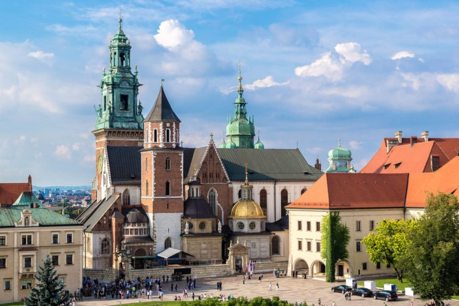
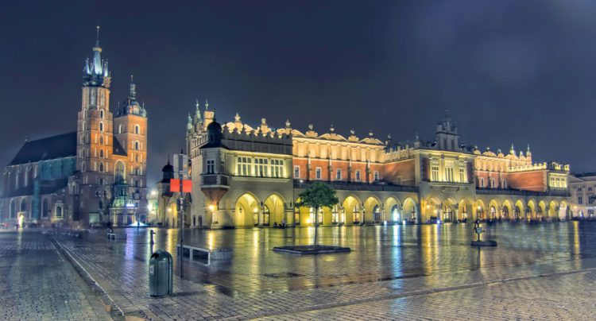
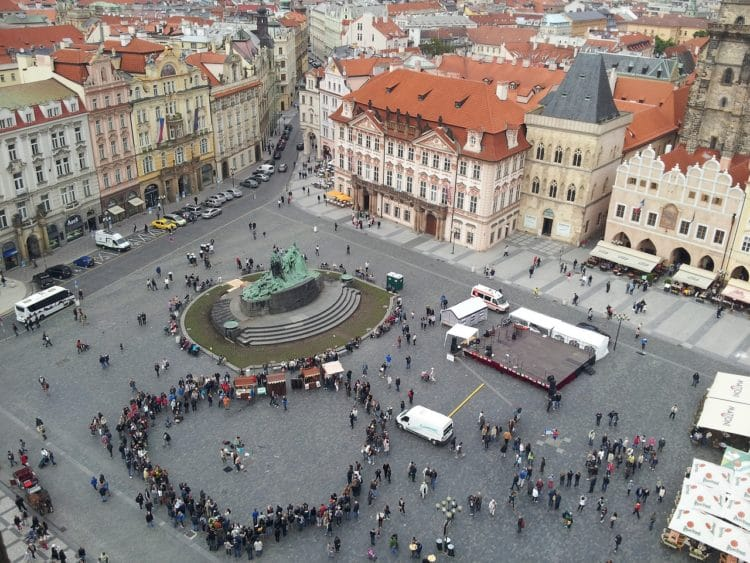
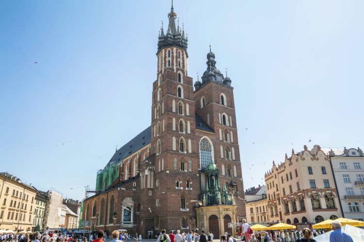
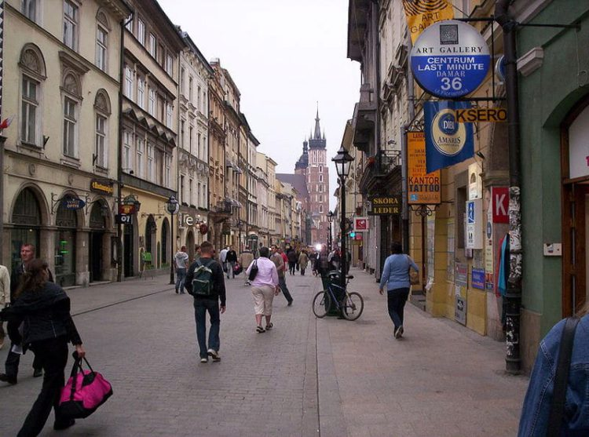
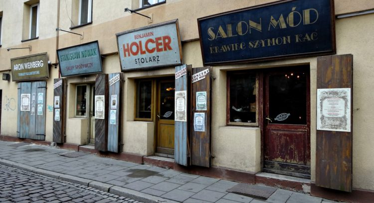
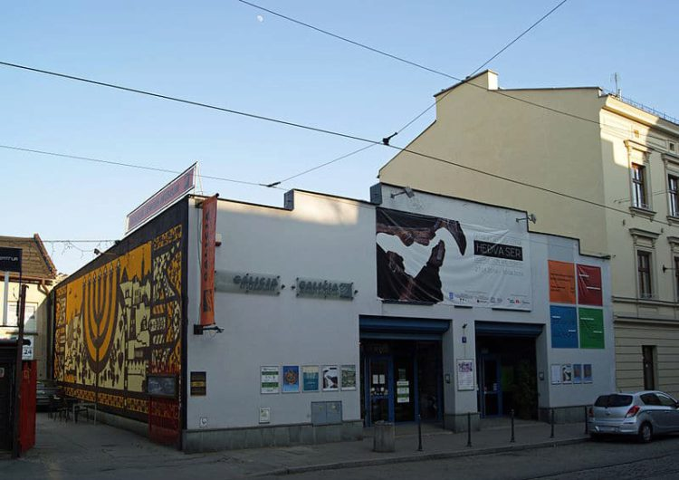
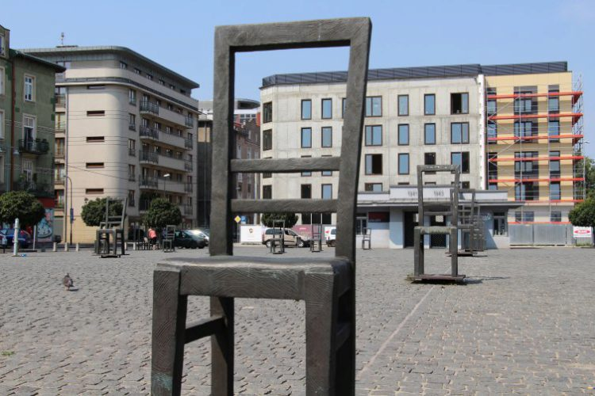
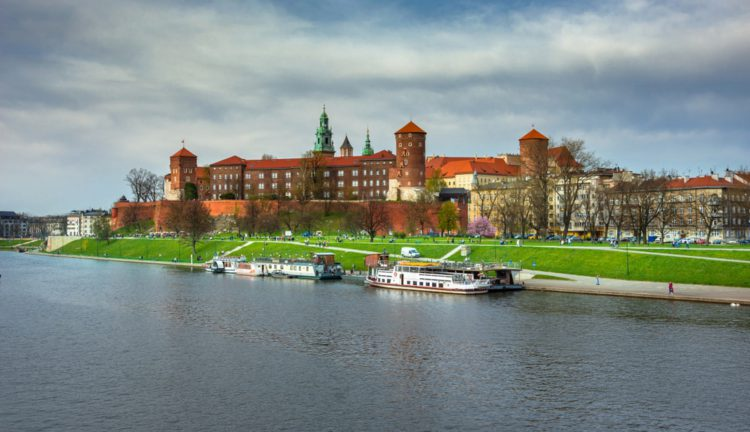

Тур в Краков

Если вы не знаете, что посмотреть в Кракове и стоит ли вообще посещать этот гостеприимный город, прочитайте наш обзор. Мы составили подробный рейтинг, описав те достопримечательности Кракова, увидеть которые должен каждый турист.
Что посмотреть в Кракове в первую очередь?
1. Собор Святых Станислава и Вацлава
Малая базилика, возведенная в готическом стиле. В составе этого католического кафедрального комплекса несколько ренессансных часовен и усыпальница, в которой покоятся национальные герои страны, поэты и представители польской королевской семьи.
2. Рыночная площадь и Суконные ряды
Что посетить в Кракове должен каждый отдыхающий? Городскую площадь, являющуюся самой крупной во всей Европе. Она была построена еще в Средневековье, и смогла сохранить элементы эпох барокко и Возрождения. Также как и многие другие лучшие достопримечательности Кракова, она украшена галереями внутренних двориков, порталами и аттиками. Приехав сюда, вы сможете осмотреть множество других знаковых польских объектов: Мариацкий костел, дворцовый комплекс Збараски, статую Адама Мицкевича, Ратушную башню. Однако наибольший интерес у путешественников обычно вызывают Суконные ряды – это торговая галерея, обустроенная еще во времена правления Болеслава Пятого.
3. Подземелья Рынка
Если вы хотите увидеть все интересные места Кракова, приготовьтесь спуститься даже под землю. Катакомбы находятся под площадью, и служат площадкой для исторического музея. В музейных помещениях располагается многочисленная инновационная мультимедийная техника, воссоздающая исторические реконструкции. В коллекциях музея – археологические находки.
4. Мариацкий костёл
Отзывы гостей и жителей города свидетельствуют о том, что здание этого костела – одно из самых красивых не только в Кракове, но и во всей стране. Оно выполнено в различных архитектурных направлениях: лаконичной готике, изысканном ренессансе и роскошном барокко. Внутреннее убранство отличается богатым и пышным видом: деревянный резной алтарь со сценами из Святого писания, сияющая позолота и шикарные своды.
5. Флорианская улица
Экскурсии в Кракове на свежем воздухе могут быть не менее интересными. Мы рекомендуем вам отправиться в историческую часть города, и прогуляться по небольшой улочке, рассматривая красочные здания в стиле классицизма, барокко и ренессанс. Здесь же вы сможете увидеть Флорианские ворота (древняя оборонительная конструкция), давшие название достопримечательности.
6. Башня Краковской ратуши
.jpg)
Готическая каменно-кирпичная постройка 14 века, украшенная куполом с арками-окнами. Если вы не знаете, что посмотреть в Кракове за 1 день, приезжайте сюда. По спиральной лесенке вы сможете подняться на обзорную площадку, с которой открываются панорамы всего города. Кроме того, во внутренних помещениях есть несколько музейных экспозиций, а в подвале – кафе, в котором подают невероятно вкусный и ароматный кофе.
7. Еврейский квартал Казимеж
Ваша поездка должна включать в себя визит в этот «город в городе». Наши рекомендации не случайны: тут находится множество религиозных и культурных объектов, имеющих отношение к еврейскому обществу. Таких, как храм тела Господня и монастырь св. Катарины. Отметим, что именно здесь создавался киношедевр «Список Шиндлера», рассказывающий об ужасах холокоста.
8. Еврейский музей «Галиция»
Здание располагается в еврейском квартиле. Выставочные образцы имеют отношение к событиям холокоста, к быту, традициям и культуре евреев. Кроме того, тут организовываются историко-познавательные лекции, научные семинары и конференции.
9. Площадь героев Гетто
Еще одно место из числа тех, куда сходить в Кракове следует обязательно. Площадь располагается на территории, где прежде свыше 20 тысяч узников фашистов находились в ужасающих условиях и ожидали перевозки в Освенцим. В память о них и их страданиях на брусчатке находятся мемориальные стулья из бронзы и чугуна.
10. Вавельский замок
Постройка находится на высоте около 230 м. на вершине горы. Продолжительное время она являлась центром страны, и поэтому заслуженно входит в список “основные достопримечательности Польши“. В давние дни здесь короновали и хоронили членов королевской семьи. Помимо самого замка, в архитектурный комплекс Вавеля входит кафедральный храм Св. Станислава и Вацлава.